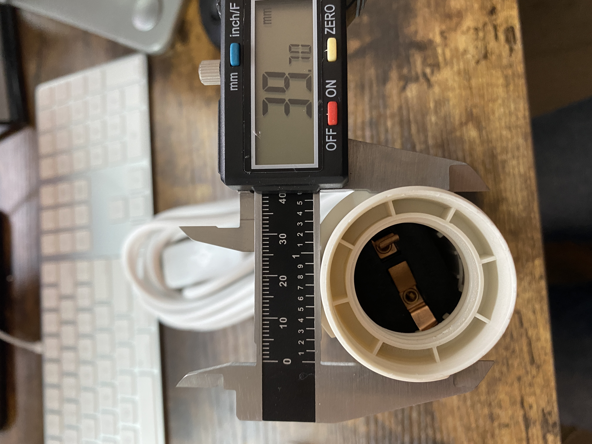

A5: Getting Meshy! and Lamps!
Nov. 8, 2022Mesh!
I found a vase and Moai.
Lamp! (Part 1)
Working in Rhino, I designed a few test pieces. Originally, I wanted my box to be tiny, but here are all the failed pieces.



Acknowledgement
Split Models: Rhino 3D and Physical JoiningResources
MoaiLow Poly Vases
Source Files
Mesh Rhino (.3dm)Mesh Cura (.stl)
Mesh GCode (.gcode)
Return to Main